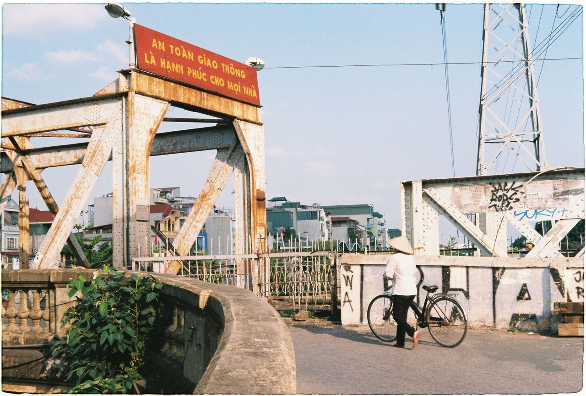
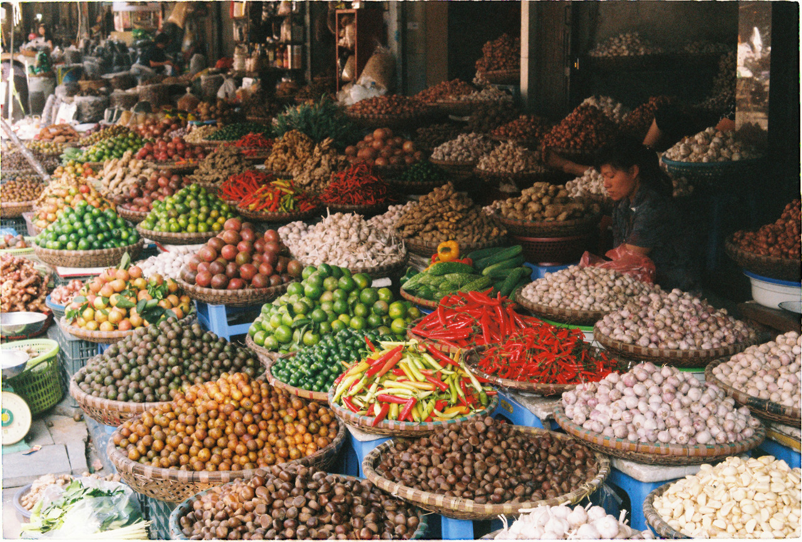

Wietnam to państwo w Azji Południowo-Wschodniej, położone na Półwyspie Indochińskim i graniczące z Chińską Republiką Ludową, Laosem i Kambodżą. Posiadając liczbę ludności ponad 90 mln jest piętnastym co do wielkości populacji państwem świata. Wietnam dzieli się na 3 rejony: północny, środkowy i południowy. Jego powierzchnia wynosi około 331 210 km², a długość granic kraju to 4639 km. Stolicą Wietnamu jest Hanoi.

| Waluta | Đồng |
|---|---|
| Powierzchnia | 331 212 km² |
| Język | Wietnamski |
| Wiara | Głównie tradycyjne wyznania plemienne i ateizm |
| Strefa Czasowa | UTC +7 |
| Ustrój polityczny | Socjalizm |

Prawdziwa kuchnia wietnamska to mnóstwo świeżych ziół, sos rybny, papier ryżowy, grillowane mięsa i sycące zupy. To mieszanina różnych tekstur. Zawijając chrupiący naleśnik z ziołami w delikatny papier ryżowy z prażonymi orzeszkami czuje się wszystko co najlepsze w kuchni wietnamskiej. Dużo się smaży, ale je się równie dużo świeżych warzyw. Do większości potraw dodaje się mnóstwo kolendry (w tym kolendry meksykańskiej!) i bazylii azjatyckiej, które nadają świeżości i lekkości.
Źródła:
www.wsandalach.pl/pysznie-tanio-duzo-jedzenie-wietnamie/
wikipedia.org/wiki/Wietnam
tumblr.com/search/vietnam